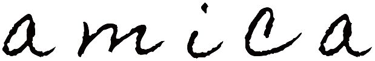

友達のようにそっと寄り添う、
天然石のワイヤージュエリーをお届けしています。
石の奥に秘められた、
個性や小さな魅力を感じながら、
あなたの毎日に、そっと寄り添う
お友達のような存在になれますように。
Care Guide お取り扱いとご注意
最終更新日 2026年10月25日
大切なお子さま・ペットの
いるご家庭へ
天然石・ワイヤー・金具など、小さな部品を使用しています。部品が外れた場合、誤飲や思わぬけがにつながるおそれがあります。
必ず、お子さまやペットの手の届かない場所に保管してください。
特にご使用後は、床やテーブルなどに置いたままにせず、専用の袋やケースに入れて保管してください。
万が一、部品が外れたり破損したりした場合は、ご使用を中止し、お子さまやペットが触れない場所に保管してください。
誤って飲み込んだおそれがある場合は、すぐに医師または獣医師にご相談ください。
14KGF・天然石・ハンドメイド作品について
14KGFについて
14KGF（ゴールドフィルド／金張り）とは、真鍮などの素材に14金を圧着したもので、金の重量が総重量の20分の1以上のものをいいます。
表面が14金で覆われているため、金製品に近い美しい輝きを楽しめます。一般的なメッキよりも剥がれにくく、丈夫なのが特徴です。
金属アレルギーが起こりにくい素材とされていますが、個人差があり、すべての方にアレルギーが起こらないことを保証するものではありません。かゆみや赤みなど、肌に異常を感じた場合はすぐにご使用を中止し、医師にご相談ください。
天然石について
天然石には、内包物やクラック（ひび）、欠けなどが見られることがあります。同じ種類の石でも、色や模様、形など、一つひとつ異なる表情を持っています。
天然石ならではの個性や風合いとして、お楽しみいただけましたら幸いです。
ハンドメイド作品について
天然石やワイヤーに傷をつけないよう、一つひとつ丁寧にお作りしています。
ハンドメイド作品のため、左右一対の作品では、ワイヤーの巻き方や石の形などにより、左右でわずかな違いが生じる場合がございます。
ワイヤーは強い力や引っかけなどにより変形することがあります。お洋服などへの引っかかりや絡まりにもご注意ください。
天然石と手仕事ならではの個性も含めて、末永くご愛用いただけましたら嬉しいです。
お取り扱いについて
- 汗や香水、ヘアスプレー、化粧品などが直接触れないようにしてください。
- 水濡れ・高温多湿・直射日光を避けて保管してください。
- ご使用後は柔らかい布などでやさしく拭き、一つずつ分けて保管することをおすすめします。
- 引っかけたり、強く引っ張ったり、押さえつけたりせず、やさしく丁寧にお取り扱いください。
次のような場面ではご使用をお控えください
- 就寝時
- 入浴・温泉
- プール・海水浴
- サウナ
- 激しい運動・スポーツ
- 家事・作業時
- 強い力や衝撃が加わる場面
修理・お直しについて
ご使用中にワイヤーの変形や、石・パーツの外れなどがございましたら、無理に直そうとせず、まずはamicaへご相談ください。
状態を確認したうえで、可能な限りお直しについてご案内いたします。
※修理内容によっては有料となる場合がございます。
お問い合わせは
Instagram の DM にて承ります。